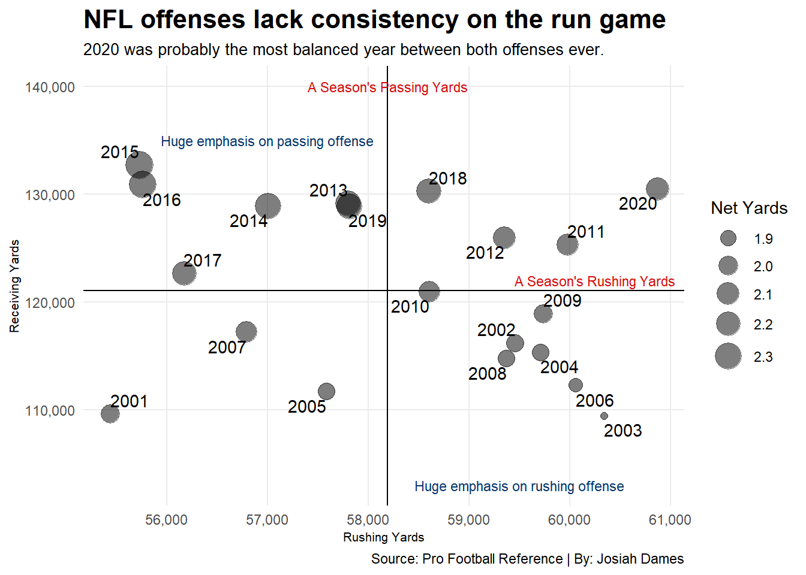
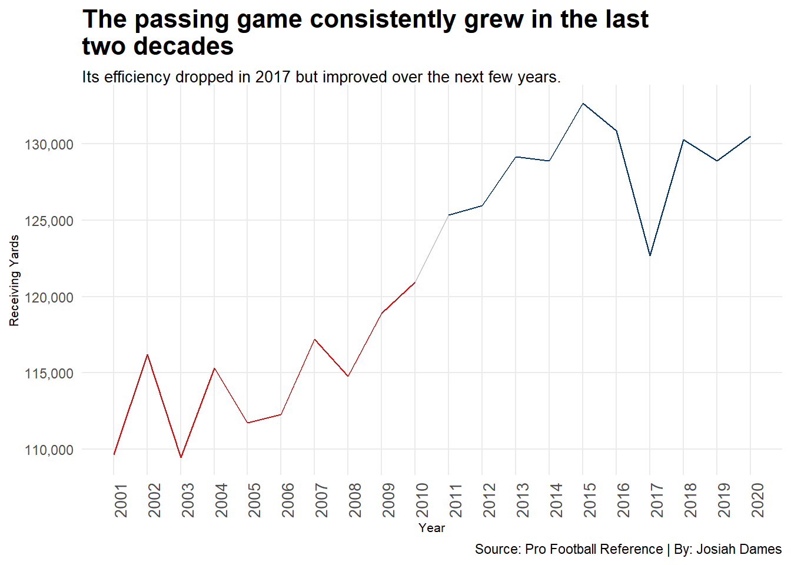
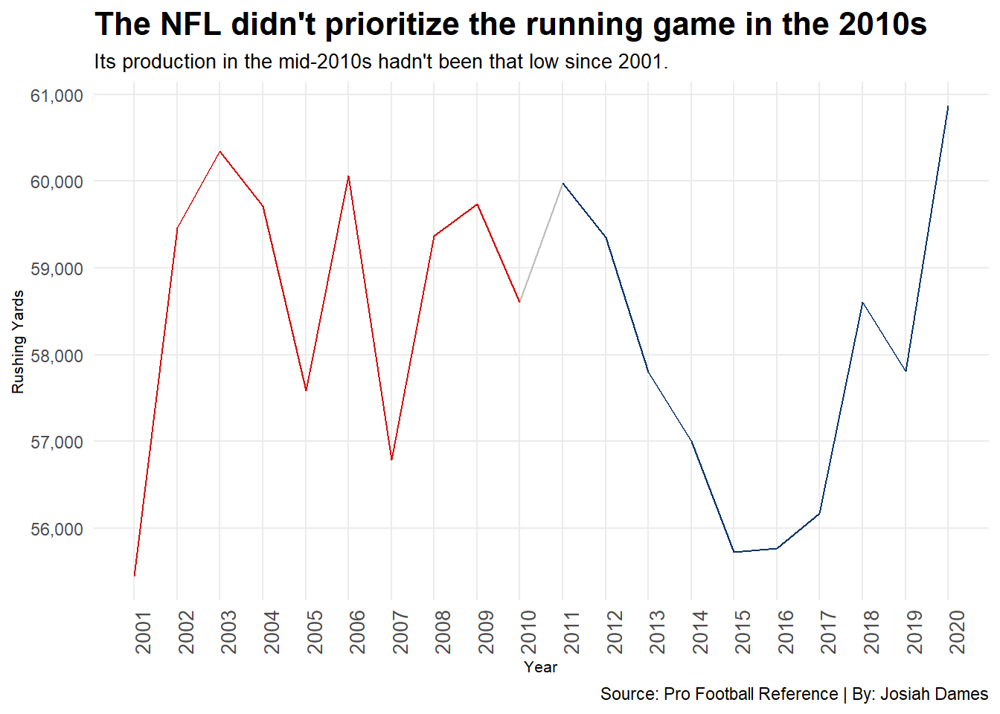
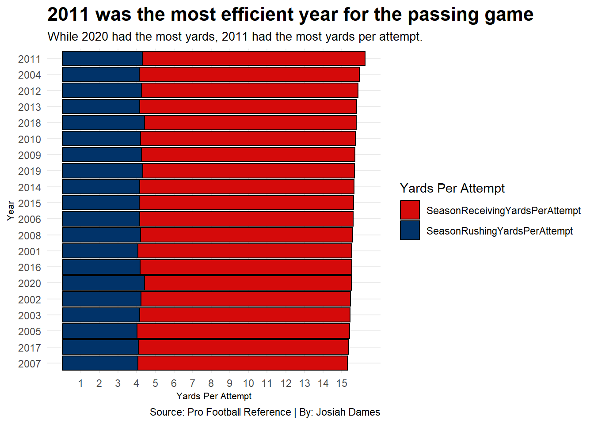

Code
library(tidyverse)
library(ggrepel)
library(readr)
library(ggplot2)
passing_rushing_totals_sports_reference <- read_csv("passing_rushing_totals_sports_reference.csv")Josiah Dames
November 17, 2024
When you think of the modern NFL, what players do you think of? Most of the time, people think of elite quarterbacks or wide receivers or running backs. The names range from Patrick Mahomes to Justin Jefferson to Derrick Henry.
However, there was an issue brewing recently that sparked controversy in the NFL: Running backs weren’t being paid as well as they should. Running backs like Johnathan Taylor and Josh Jacobs were having contract issues throughout 2023. There were even kickers that were out earning running backs.
This begs some questions: Is the position of running back dying in the NFL? Is the NFL focusing on the passing game? Let’s look at the last two decades, 2001-2010 and 2011-2020. With the exception of the 2001 season, each season had 32 teams playing. This was also before the NFL officially moved to a 17-game regular season.
The Pro Football Reference shows the NFL’s history of offense, both on the ground and in the air.
First, we will ask the question: Is the passing game giving the run game a chance to flourish in the NFL?
We will divide each year’s receiving yards by rushing yards to create a factor called “Net Yards.” This indicates that for every one rushing yard, there is a number of receiving yards to that one rushing yard. The bigger the “Net Yards,” the bigger the difference between receiving and rushing yards.
nfl <- passing_rushing_totals_sports_reference |>
filter(Year >= 2001 & Year <=2020) |>
mutate(
NetYards = ReceivingYards/RushingYards
)
ggplot() +
geom_point(
data=nfl,
aes(x=RushingYards, y=ReceivingYards, size=NetYards),
alpha = 0.3) +
scale_size(range = c(2,8), name = "Net Yards") +
geom_point(
data = nfl,
aes(
x = RushingYards,
y = ReceivingYards,
size = NetYards),
alpha = .3,
color = "black") +
geom_text_repel(
data=nfl,
aes(x=RushingYards, y=ReceivingYards, label=Year)) +
geom_vline(xintercept = 58189.71) +
geom_hline(yintercept = 121042.3) +
theme_minimal() +
labs(
x = "Rushing Yards", y = "Receiving Yards",
title = "NFL offenses lack consistency on the run game",
subtitle = "2020 was probably the most balanced year between both offenses ever.",
caption = "Source: Pro Football Reference | By: Josiah Dames"
) +
geom_text(
aes(x = 60250, y = 122000),
label = "A Season's Rushing Yards",
size = 3,
color = "dark grey"
) +
geom_text(
aes(x = 58195, y = 140000),
label = "A Season's Passing Yards",
size = 3,
color = "dark grey"
) +
geom_text(
aes(x = 57000, y = 135000),
label = "Huge emphasis on passing offense",
size = 3
) +
geom_text(
aes(x = 59500, y = 103000),
label = "Huge emphasis on rushing offense",
size = 3
) +
scale_x_continuous(labels = scales::comma) +
scale_y_continuous(labels = scales::comma) +
theme_minimal() +
theme(
plot.title = element_text(size = 16, face = "bold"),
plot.subtitle = element_text(size = 10),
axis.title = element_text(size = 8),
panel.grid.minor = element_blank()
)
As we look at the two decades of football, the 2000s show that they emphasize the run game a lot more and there isn’t much difference between the yards in the air or on the ground. The 2010s, however, were all over the place.
According to Fox Sports, the 2010s offense was solely in the air. This can be proven by many teams’ offensive statistics. The teams that were noted were the 2011 New Orleans Saints, 2011 Green Bay Packers, 2013 Denver Broncos, 2016 Atlanta Falcons, 2018 Kansas City Chiefs, and 2019 Baltimore Ravens. By itself, the Falcons’ Super Bowl LI run in 2016 had quarterback Matt Ryan throwing for almost 5,000 yards and 38 touchdowns in the regular season with the offense the highest grade offense since in the 2010s at 94.1. That is very impressive.
This leads to the next question: how much did the rushing and passing game change by year? In order to see the dip in rushing and rise in passing offense, we need to see each year side by side.
The 2000s will be colored Rosso Corsa and the 2010s will be colored Dark Midnight Blue.
decadeone <- nfl |>
filter(Year >= 2001 & Year <= 2010)
decadetwo <- nfl |>
filter(Year >= 2011 & Year <= 2020)
ggplot() +
geom_line(data=nfl, aes(x=Year, y=ReceivingYards), color="grey") +
geom_line(data=decadeone, aes(x=Year, y=ReceivingYards), color="#d50a0a") +
geom_line(data=decadetwo, aes(x=Year, y=ReceivingYards), color="#013369") +
labs(
y = "Receiving Yards",
x = "Year",
fill = "Receiving Yards",
title = "The pass game is surprisingly consistent the last two decades",
subtitle = "The pass game's effectiveness drops in 2017 but the next few years picked up the slack.",
caption = "Source: Pro Football Reference | By: Josiah Dames"
) +
scale_y_continuous(labels = scales::comma) +
scale_x_continuous(breaks = c(2001:2020)) +
theme_minimal() +
theme(
plot.title = element_text(size = 16, face = "bold"),
plot.subtitle = element_text(size = 10),
axis.title = element_text(size = 8),
axis.text.x = element_text(size=10, angle=90),
panel.grid.minor = element_blank()
)
We love our big pass plays now, they’re a lot more exciting to watch. Is the NFL trying to push for this kind of offense, just so it can get more clicks for crazy highlights by wide receivers? Maybe, but maybe there is something else to this.
Let’s look at the run game throughout the last two decades.
ggplot() +
geom_line(data=nfl, aes(x=Year, y=RushingYards), color="grey") +
geom_line(data=decadeone, aes(x=Year, y=RushingYards), color="#d50a0a") +
geom_line(data=decadetwo, aes(x=Year, y=RushingYards), color="#013369") +
labs(
y = "Rushing Yards",
x = "Year",
fill = "Rushing Yards",
title = "The run game was not the top priority in the 2010s",
subtitle = "The mid-2010s had dropped productivity as low as 2001, which hadn't been seen in a decade.",
caption = "Source: Pro Football Reference | By: Josiah Dames"
) +
scale_y_continuous(labels = scales::comma) +
scale_x_continuous(breaks = c(2001:2020)) +
theme_minimal() +
theme(
plot.title = element_text(size = 16, face = "bold"),
plot.subtitle = element_text(size = 10),
axis.title = element_text(size = 8),
axis.text.x = element_text(size=10, angle=90),
panel.grid.minor = element_blank()
)
If you were a running back in the mid-2010s, you were not getting enough love. Luckily, it looks like the trend for rushing is going up slowly. Fortunately, there is an explanation for this.
NFL Football Operations explain that in recent seasons, the passing yards per game is slowly dropped from 496 in 2020 to 403 in 2024. This means that defenses across the league have slowly adjusted to the passing game. Defenses have embraced Cover 2, Cover 4, and Cover 6, and defenders are lining up farther back than in 2019. If this trend continues, maybe the NFL moves back to a more dominant rush league.
However, every year is different than each other and random things occur, affecting both the run and passing games. There are some years that did better than others. This begs the question: where does each year rank individually with their rushing and receiving yards?
The receiving yards will be colored Rosso Corsa and the rushing yards will be colored Dark Midnight Blue.
big <- passing_rushing_totals_sports_reference |>
group_by(Year) |>
summarise(
SeasonRushingYards = sum(RushingYards),
SeasonReceivingYards = sum(ReceivingYards),
TotalOffensiveYards = SeasonRushingYards + SeasonReceivingYards,
.groups = 'drop'
) |>
filter(Year >= 2001 & Year <=2020)
biglong <- big |>
select(-TotalOffensiveYards) |>
pivot_longer(
cols = ends_with("Yards"),
names_to = "metric"
)
ggplot() +
geom_bar(data=biglong, aes(x=reorder(Year, value), weight=value, fill=metric), color = "black") +
scale_fill_manual(values = c("#d50a0a", "#013369")) +
coord_flip() +
labs(
y = "Season Yards",
x = "Year",
fill = "Season Yards",
title = "The 2010s dominate receiving yards compared to the 2000s",
subtitle = "Regardless of how stagnant the run game is, the NFL tried throwing the ball more.",
caption = "Source: Pro Football Reference | By: Josiah Dames"
) +
scale_y_continuous(labels = scales::comma) +
theme_minimal() +
theme(
plot.title = element_text(size = 16, face = "bold"),
plot.subtitle = element_text(size = 10),
axis.title = element_text(size = 8),
panel.grid.minor = element_blank()
)Once again, the 2010s dominate the top spots. But what about each years’ offensive efficiency? Surely the years with the most yards have the best yards per attempt rate on both sides of offense.
big <- passing_rushing_totals_sports_reference |>
group_by(Year) |>
summarise(
SeasonRushingYardsPerAttempt = RushingYards/RushingAttempts,
SeasonReceivingYardsPerAttempt = ReceivingYards/ReceivingReceptions,
TotalOffensiveYards = SeasonRushingYardsPerAttempt + SeasonReceivingYardsPerAttempt,
.groups = 'drop'
) |>
filter(Year >= 2001 & Year <= 2020)
biglong <- big |>
select(-TotalOffensiveYards) |>
pivot_longer(
cols = ends_with("Attempt"),
names_to = "metric"
)
ggplot() +
geom_bar(data=biglong, aes(x=reorder(Year, value), weight=value, fill=metric), color = "black") +
scale_fill_manual(values = c("#d50a0a", "#013369")) +
coord_flip() +
labs(
y = "Yards Per Attempt",
x = "Year",
fill = "Yards Per Attempt",
title = "2011 was the most efficient year",
subtitle = "2004 gained more yards per attempt on average compared to 2020.",
caption = "Source: Pro Football Reference | By: Josiah Dames"
) +
scale_y_continuous(labels = scales::comma, breaks=c(1:15)) +
theme_minimal() +
theme(
plot.title = element_text(size = 16, face = "bold"),
plot.subtitle = element_text(size = 10),
axis.title = element_text(size = 8),
panel.grid.minor = element_blank()
)
Just because you try throw or run the ball more, doesn’t always mean it is as effective. If 2011 is the most effective year for the pass game, maybe former Green Bay quarterback Aaron Rodgers and the 2011 Packers could be argued as one of, if not, the most efficient offense in all of NFL history.
One thing is for certain: nothing is ever consistent. Eventually, the defense will figure it out, and then it’s back to the drawing board.